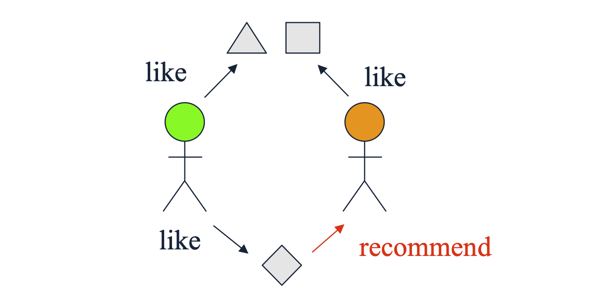

1. Introduction: 협업 필터링(Collaborative Filtering)이란?
지난 포스트에서는 아이템이 가진 고유의 텍스트나 메타데이터(장르, 감독 등)를 분석하는 “콘텐츠 기반 추천(Content-based Recommendation)”을 다루었습니다. 하지만 현실의 많은 추천 시스템은 아이템의 “내용”이 무엇인지 전혀 알지 못해도 훌륭하게 작동합니다. 이를 가능하게 하는 것이 바로 협업 필터링(Collaborative Filtering) 입니다.
협업 필터링의 철학은 매우 단순하고 직관적입니다. “오직 유틸리티 행렬(Utility Matrix)에 기록된 사용자들의 행동(상호작용) 패턴만을 활용한다”는 것입니다. 즉, 어떤 아이템의 프로필은 그 아이템을 구성하는 특성이 아니라, “그 아이템을 구매하거나 평가한 사용자들의 집합(유틸리티 행렬의 열 벡터)” 으로 정의됩니다.
협업 필터링은 관점에 따라 크게 두 가지로 나뉩니다.
- User-User Collaborative Filtering: 나와 비슷한 취향을 가진 “사용자”를 찾아 그들이 좋아하는 아이템을 추천받는 방식.
- Item-Item Collaborative Filtering: 내가 과거에 좋아했던 “아이템”과 같이 소비되는 경향이 있는 비슷한 아이템을 추천받는 방식.

2. 유사도 측정 (Finding Similar Users)과 그 한계점
User-User 협업 필터링의 첫 단계는 타겟 사용자 \(U\)와 유틸리티 행렬 상에서 가장 유사한 평가 기록을 남긴 “이웃(Neighbors)” 을 찾는 것입니다. 이를 위해 다양한 유사도 지표(Similarity Metrics)를 적용할 수 있으나, 유틸리티 행렬의 특성(극심한 희소성, 빈칸의 존재 등)으로 인해 단순 적용 시 논리적 모순이 발생할 수 있습니다.
다음의 유틸리티 행렬 예시를 통해 문제점들을 살펴보겠습니다. (1~5점 척도, 빈칸은 미평가)
| Users | HP1 | HP2 | HP3 | TW | SW1 | SW2 | SW3 |
|---|---|---|---|---|---|---|---|
| A | 4 | 5 | 1 | ||||
| B | 5 | 5 | 4 | ||||
| C | 2 | 4 | 5 | ||||
| D | 3 | 3 |
- 목표는 사용자 A와 가장 유사한 사용자를 찾는 것입니다. A는 (HP1, TW)에 높은 평점을, (SW1)에 낮은 평점을 주었습니다. 직관적으로 HP1에 5점을 준 B가 A와 취향이 비슷해 보이고, TW에 2점을 주고 SW1에 4점을 준 C는 A와 정반대의 취향을 가진 것으로 보입니다.
2.1. 자카드 유사도 (Jaccard Similarity)의 함정
- 자카드 유사도는 평점의 “값(크기)”을 무시하고, 단순히 평가를 했는지 안 했는지(교집합의 크기) 만을 따집니다.
- \(A\)가 평가한 집합: \(\{HP1, TW, SW1\}\)
- \(B\)가 평가한 집합: \(\{HP1, HP2, HP3\}\)
- \(C\)가 평가한 집합: \(\{TW, SW1, SW2\}\)
\[Jaccard(A, B) = \frac{|\{HP1\}|}{|\{HP1, HP2, HP3, TW, SW1\}|} = \frac{1}{5}\] \[Jaccard(A, C) = \frac{|\{TW, SW1\}|}{|\{HP1, TW, SW1, SW2\}|} = \frac{2}{4}\]
- 결과적으로 \(Jaccard(A, C) > Jaccard(A, B)\)가 도출됩니다. 직관과 달리 취향이 정반대인 C가 더 유사하다고 판단하는 오류를 범하게 됩니다. 평점의 호불호(Likes vs Dislikes)를 무시한 결과입니다.
2.2. 코사인 유사도 (Cosine Similarity)의 함정
- 코사인 유사도는 평점을 벡터 공간의 점으로 취급합니다. 이때 평가하지 않은 빈칸(결측치)을 0으로 간주하고 내적을 계산합니다.
- \(\mathbf{v}_A = [4, 0, 0, 5, 1, 0, 0]\)
- \(\mathbf{v}_B = [5, 5, 4, 0, 0, 0, 0]\)
- \(\mathbf{v}_C = [0, 0, 0, 2, 4, 5, 0]\)
- 계산해보면 \(Cosine(A, B) \approx 0.380\), \(Cosine(A, C) \approx 0.322\)가 나옵니다. B가 더 유사하다는 직관에는 부합하지만, 근본적인 문제가 있습니다. “평가하지 않음(No rating)”이 “매우 싫어함(0점)”으로 수학적으로 처리되어 버린다는 점입니다.
3. 유사도 지표의 개선 (Improving Similarity Metrics)
- 앞서 발생한 문제들을 해결하기 위해 지표를 약간 변형해야 합니다.
3.1. 자카드 유사도의 개선: 반올림/이진화 (Rounding the data)
- 모든 평가 기록을 동일하게 취급하지 않고, 높은 평점(High ratings: 3, 4, 5점)만 “1”로 변환하고 나머지는 무시(0)하여 자카드 유사도를 다시 계산합니다.
- \(A\)의 긍정 평가 집합: \(\{HP1, TW\}\) (SW1은 1점이므로 탈락)
- \(B\)의 긍정 평가 집합: \(\{HP1, HP2, HP3\}\)
- \(C\)의 긍정 평가 집합: \(\{SW1, SW2\}\) (TW는 2점이므로 탈락)
- 이제 다시 교집합을 구해보면 \(Jaccard(A, B) = \frac{1}{4}\), \(Jaccard(A, C) = 0\)이 됩니다. 비로소 우리의 직관과 일치하게 됩니다.
3.2. 피어슨 상관계수 (Pearson”s Correlation Coefficient) / 평균 중심화 (Mean-Centering)
코사인 유사도에서 “빈칸 = 0” 문제를 가장 우아하게 해결하는 방법은 각 사용자의 평균 평점을 빼서 데이터의 영점(Zero-point)을 맞추는 평균 중심화(Normalize / Mean-centering) 를 수행하는 것입니다.
예를 들어 사용자 A의 평균 평점이 \(10/3\) 이라면, A가 준 4점은 \(4 - 10/3 = 2/3\) (긍정)이 되고, 1점은 \(1 - 10/3 = -7/3\) (부정)이 됩니다. 빈칸은 그대로 0을 유지하는데, 이제 이 0의 의미는 “싫어함”이 아니라 “평균적인 선호도(Neutral)” 로 합리적으로 해석됩니다.
이를 수식으로 엄밀히 정의한 것이 피어슨 상관계수(Pearson Correlation) 입니다. 두 사용자 \(A, B\)가 공통으로 평가한 아이템 집합을 \(S\)라고 할 때, 유사도는 다음과 같이 계산됩니다. \[sim(A,B) = \frac{\sum_{s \in S} (r_{A,s} - \bar{r}_A)(r_{B,s} - \bar{r}_B)}{\sqrt{\sum_{s \in S} (r_{A,s} - \bar{r}_A)^2} \sqrt{\sum_{s \in S} (r_{B,s} - \bar{r}_B)^2}}\]
- \(r_{A,s}\): 사용자 \(A\)가 아이템 \(s\)에 부여한 평점
- \(\bar{r}_A\): 사용자 \(A\)의 전체 평균 평점
정규화된 행렬로 코사인 유사도(즉, 피어슨 상관계수)를 구하면 \(sim(A, B) = 0.092 > sim(A, C) = -0.559\)가 도출됩니다. C와의 유사도가 음수(-)로 떨어지면서 취향이 완전히 상반됨을 수학적으로 명확히 잡아냅니다. 단, 공통으로 평가한 집합 \(S\)의 크기가 너무 작으면 우연에 의해 상관계수가 극단적으로 나올 수 있으므로 주의해야 합니다.
4. 평점 예측 (Rating Predictions)
유사도 계산을 통해 타겟 사용자 \(x\)와 가장 유사한 이웃 그룹 \(N\) (크기 \(k\))을 찾았다면, 이제 목표 아이템 \(i\)에 대한 \(x\)의 평점 \(r_{xi}\)를 예측해야 합니다.
이때 이웃 그룹 \(N\) 중에서도 실제로 아이템 \(i\)를 평가한 사용자들의 부분집합을 \(N"\)이라고 합시다.
4.1. 단순 평균 (Simple version)
- 가장 간단한 방법은 이웃들이 남긴 평점의 산술 평균을 구하는 것입니다. \(k"\)은 \(N"\)의 크기를 의미합니다. \[r_{xi} = \frac{1}{k"} \sum_{y \in N"} r_{yi}\]
4.2. 가중 평균 (Complicated version)
- 단순 평균은 “조금 비슷한” 이웃과 “매우 비슷한” 이웃의 의견을 동등하게 취급합니다. 이를 개선하여, 나와 유사도(sim)가 높을수록 그 사람의 평점에 더 높은 가중치를 부여하는 방식을 사용합니다. \[r_{xi} = \frac{\sum_{y \in N"} sim(x,y) \cdot r_{yi}}{\sum_{y \in N"} sim(x,y)}\]
- 분모는 가중치의 총합으로 나누어 스케일을 맞춰주는 정규화 역할을 합니다.
5. Item-Item 협업 필터링의 대두
지금까지 설명한 접근법은 “유사한 사람”을 찾는 User-User 방식이었습니다. 하지만 행렬의 관점을 뒤집어(Transpose) “유사한 아이템”을 찾는 Item-Item 협업 필터링을 적용할 수도 있습니다.
특정 타겟 아이템 \(i\)의 평점을 예측하기 위해, 내가 과거에 평가했던 아이템 중 \(i\)와 소비 패턴이 가장 유사한 아이템들을 찾습니다. 예측 수식은 User-User의 구조와 완전히 동일하며 변수만 바뀝니다. \[r_{xi} = \frac{\sum_{j \in N(i,x)} sim(i,j) \cdot r_{xj}}{\sum_{j \in N(i,x)} sim(i,j)}\]
- \(N(i,x)\): 아이템 \(i\)와 유사하면서, 동시에 사용자 \(x\)가 이미 평가를 완료한 아이템들의 집합.
Item-Item이 실무에서 더 자주 쓰이는 이유
- 일반적으로 User-User보다 Item-Item 방식이 더 신뢰성(Reliable)이 높다고 평가받습니다.
- 사용자(User)의 취향은 매우 다차원적이고 변덕스럽습니다. (SF도 좋아하고 로맨스 코미디도 좋아할 수 있습니다.) 반면, 아이템(Item)은 그 자체가 가진 정체성이 뚜렷하여 단일한 속성(e.g., 특정 장르, 특정 용도)으로 분류되기 쉽기 때문에 유사도를 계산했을 때 훨씬 안정적인 패턴이 도출됩니다. 다만, 신규 아이템이 쏟아지는 환경에서는 User-User가 유리할 때도 있으므로 상황에 맞게 혼합하여 사용합니다.
6. 협업 필터링의 장단점 (Pros and Cons)
장점 (Pros)
- 특성 공학 불필요 (Do not have to come up with features): 콘텐츠 기반 추천처럼 복잡한 텍스트 분석, 이미지 인식, 메타데이터 구축 등 아이템 프로필을 만들기 위한 도메인 지식이나 노가다가 전혀 필요 없습니다. 행동 데이터 자체만으로 학습이 가능합니다.
단점 (Cons)
- 콜드 스타트 및 희소성 문제 (Cold Start & Sparsity): 매칭을 성사시키기 위해서는 시스템 내에 “충분히 많은 사용자”와 상호작용 기록이 누적되어야 합니다. 또한, 누구도 평가하지 않은 완전한 신규 아이템이나 초비주류 아이템은 절대 추천될 수 없습니다.
- 인기 편향 및 필터 버블 (Popularity Bias): 결국 다수의 사용자가 긍정적으로 평가한 유명한 아이템 위주로 추천이 몰리는 경향이 있습니다. 개인의 고유하고 독특한 취향(Unique taste)을 만족시키거나 참신한 발견(Serendipity)을 제공하는 데는 한계가 있습니다.